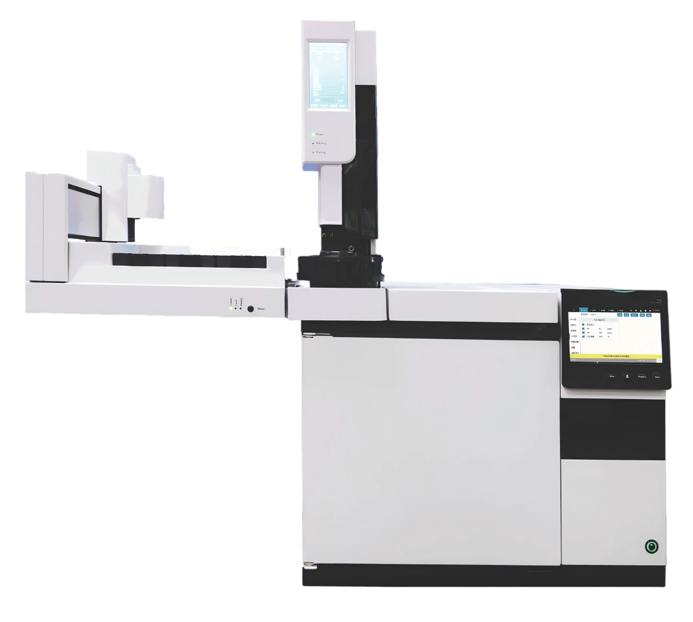

GC 7000
Профессиональная производительность ГХ для лабораторий с ограниченным бюджетом
Открыть страницу первоисточника ↗Передовой газовый хроматограф с IoT-технологией, открывающий новые возможности — отличный баланс надёжности, производительности и эффективности. Создан для лабораторий будущего с упором на простоту доступа и эксплуатации. Идеальная ГХ-система для экологического, химического, нефтехимического, пищевого, судебно-экспертного, фармацевтического анализа и испытаний материалов.
Настоящее «IoT»-решение. Встроенная программная платформа uniLite позволяет выполнять трудоёмкую диагностику, обновлять прошивку, строить графики в реальном времени, редактировать методики и последовательности, просматривать журналы через интуитивный многофункциональный сенсорный экран — или удалённо с планшета, телефона или компьютера.
Усовершенствованное пневматическое управление. Архитектура APC на основе микроканалов защищает от утечек H₂.
Высокомодульные детекторы. Все модули детекторов устанавливаются самостоятельно через единый 4-контактный разъём, что сводит к минимуму простои системы.
Высокая скорость и производительность. В одной системе можно установить более 4 инжекторов, 5 детекторов и 2 термостата, доступны блоки клапанов, многоканальные жидкостные/газовые автосэмплеры и система динамического разбавления.
Доступ с любого терминала. Встроенный 7-дюймовый сенсорный экран плюс веб-сервер для удалённого доступа; 4 физические кнопки (Stop, Pre-run, Service, Start) для быстрого локального управления.